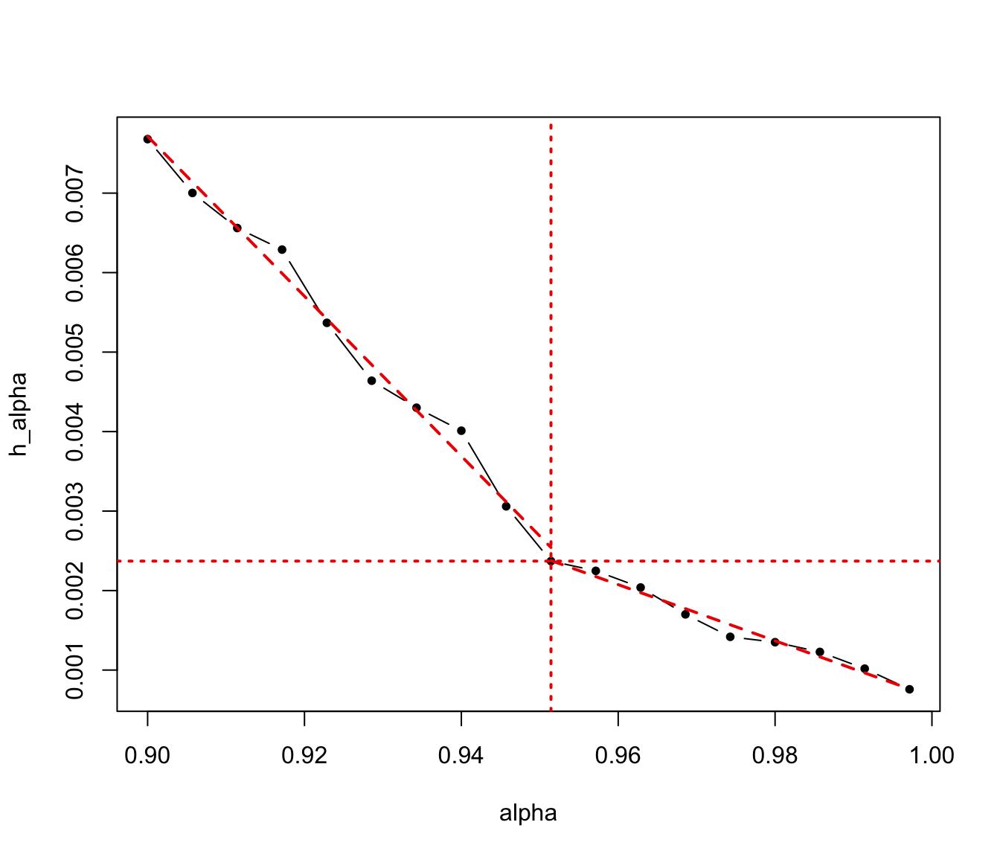
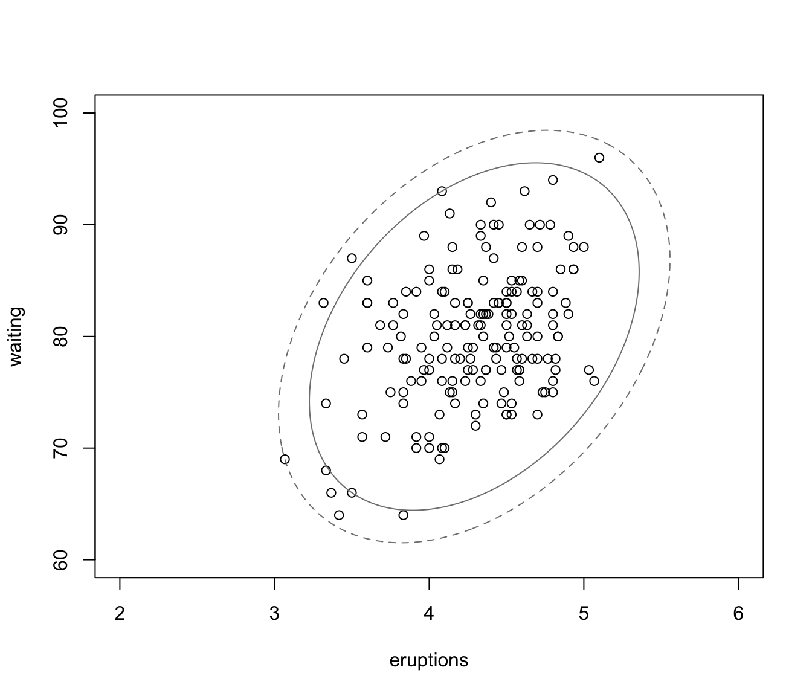

Default HDR level defining the GMM hull
hypvolgmm_hdlevel.RdCompute default HDR level used to define the GMM hull. This is obtained by fitting a two-segment piecewise linear regression model (i.e., single change point model) to a grid of \((\alpha, h_\alpha)\) values with \(\alpha\) in \([0.9, 1]\).
Value
Returns a list containing the following elements:
alphaA vector of alpha values specifying the HDR levels.h_alphaA vector of HDR density values corresponding toalpha.pcwsregThe two-segment piecewise linear regression model.hdlThe optimal HDR level selected as the change-point value.hThe HDR density values corresponding to the optimal HDR level.
Examples
x = subset(faithful, eruptions > 3)
mod = densityMclust(x, plot = FALSE)
out = hypvolgmm_hdlevel(mod$density)
with(out,
{
plot(alpha, h_alpha, type = "b", pch = 20)
lines(alpha[1:pcwsreg$c],
pcwsreg$a1 * alpha[1:pcwsreg$c] + pcwsreg$b1,
lty = 2, lwd = 2, col = "red2")
lines(alpha[pcwsreg$c:length(alpha)],
pcwsreg$a2 * alpha[pcwsreg$c:length(alpha)] + pcwsreg$b2,
lty = 2, lwd = 2, col = "red2")
abline(v = hdl, lty = 3, col = "red2", lwd = 2)
abline(h = h, lty = 3, col = "red2", lwd = 2)
})

plot(x, xlim = c(2,6), ylim = c(60,100))
surfacePlot(data = mod$data, parameters = mod$parameters,
what = "density", type = "contour",
levels = c(out$h, min(mod$density)),
xlim = c(2,6), ylim = c(60,100), lty = c(1,2),
add = TRUE, drawlabels = FALSE)
